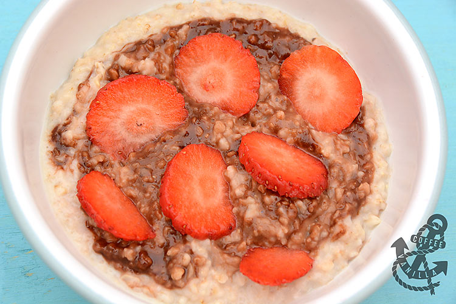

Nutella Oats

Description
This recipe for Nutella oats is perfect for Nutella lovers like myself.
This is the only way I can manage to eat oats without them tasting bland.
In general, oats are very good for heart health and help people with
heart conditions. Another benefit of eating oats is that they keep you full for
a long time. This is especially helpful when you tend to get hungry well before
lunch. For this recipe, feel free to use any kinds of oats as the recipe will be very similar for all.
Ingredients
- 1/2 cup steel cut oats
- 2 Tbsp Nutella
- 1 cup milk
- 1 cup chopped strawberries/bananas
- Pinch of sugar
Steps
- In a saucepan, pour in your milk and heat it at medium heat
- Wait for your milk to start to slowly boil and turn down the heat once it does.
- Measure and pour in your oats
- Turn up heat to medium again and stir frequently to ensure that the oats do not clump
- Once your oatmeal has reached a mushy texture, turn off the heat
- Add a pinch of sugar and stir
- Now add your Nutella to the pan and stir
- Once the nutella has fully combined, pour your oatmeal into a bowl
- Top with strawberries, bananas or any nuts and enjoy!